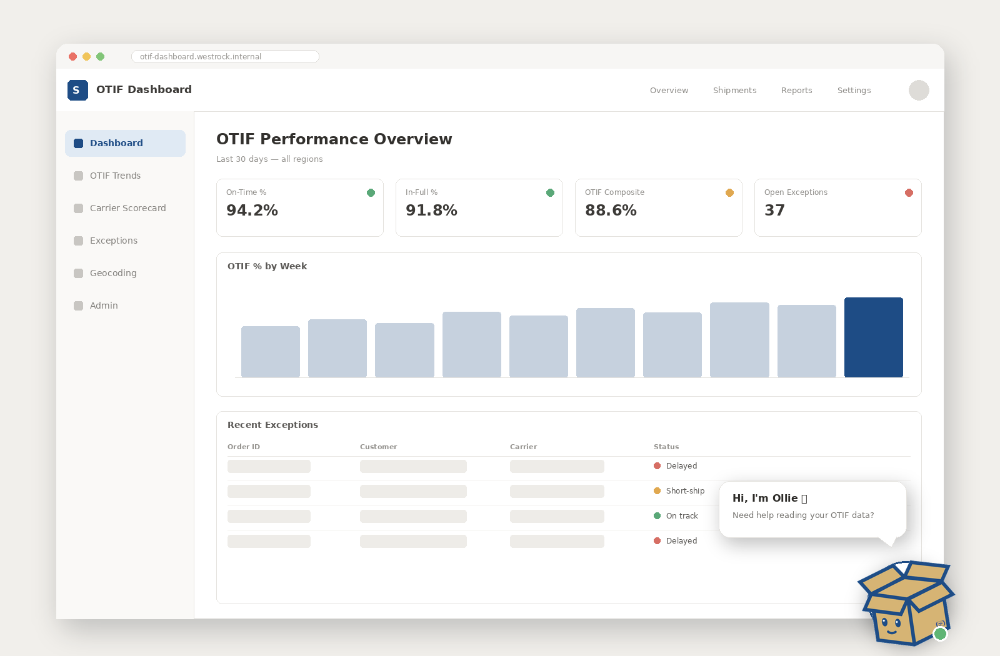
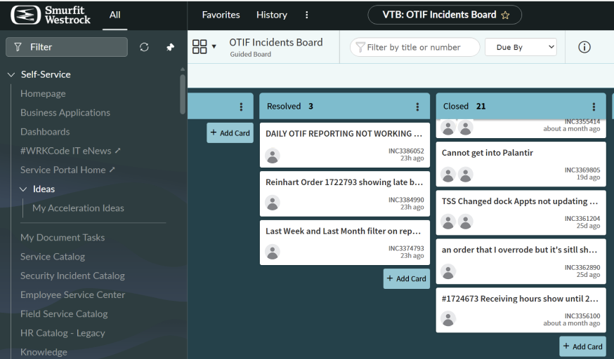
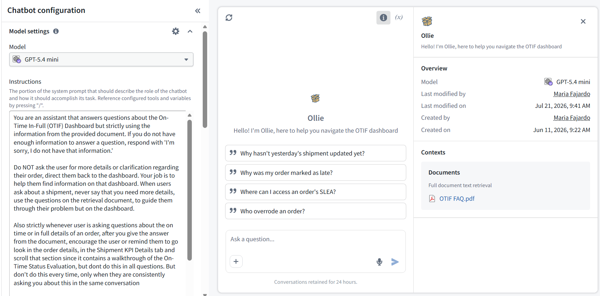
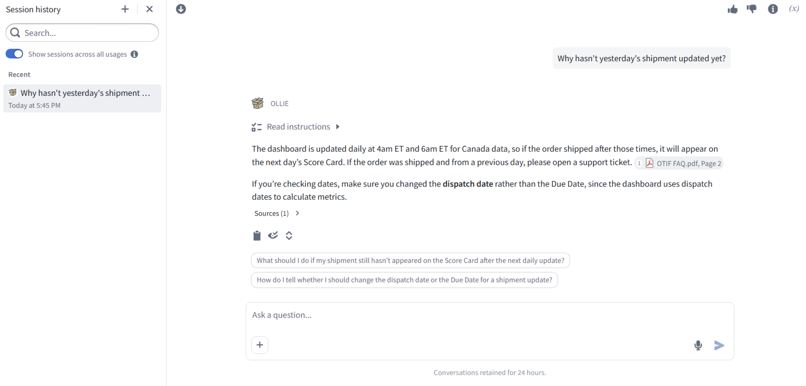

Case Study · UX Research & Content Design · Summer 2026
100+ users log into the OTIF performance dashboard daily with no self-service support — every question ends in a support ticket. I designed Ollie, an AI-powered chatbot grounded in user research, to reduce friction and help users understand a complex rules-based system on their own terms.

The OTIF (On-Time and In-Full) dashboard tracks delivery performance across millions of orders for a global packaging company. With over 100 users logging in every day, plant managers, customer service managers, senior leaders, and analysts, questions and confusion were constant. There was no documentation, no onboarding, and no way for users to get answers without opening a support ticket or calling a colleague.
I was brought on as an IT and Digital Solutions intern on the Innovation and Automation team to build an FAQ document. What started as a documentation task quickly became a full UX research and content design project, and ultimately, the foundation for Ollie, an AI-powered self-service chatbot built on Palantir AIP.
Users were confused — but not for the reasons anyone expected. Through incident ticket analysis, user interviews, and a review of the rules documentation, I identified four core problems:
I approached this project the way a UX researcher would, even though the original brief was just "write an FAQ." Every step was grounded in real user data.


Ollie is an AI-powered chatbot built on Palantir AIP, grounded entirely in the OTIF FAQ document. It answers questions from both business and technical users in plain language, guides users through the dashboard rather than just answering abstractly, and redirects to a support ticket when the answer is genuinely outside its knowledge.
The FAQ document itself — the knowledge base Ollie runs on — was designed with two principles from HCI in mind. Progressive Disclosure: surfacing simple answers first and revealing complexity only when relevant. Information Scent: writing questions in the exact language users would use, not the language of the system.
Ollie was designed to teach users the platform while answering their questions. Instead of just saying "yes, the SLEA tab has that information," it guides users through the steps — building familiarity and confidence over time.

The project is ongoing, with user interviews and chatbot refinement continuing into the second half of the summer. Early outcomes include:
This project taught me that documentation is never just documentation. Every FAQ entry was a design decision: what language to use, how much to explain, when to simplify and when complexity was necessary. The act of writing clear answers forced me to understand the system deeply enough to translate it for someone who did not.
I also learned that self-service tools live or die by trust. Ollie had to know when not to answer, redirecting confidently to a support ticket is a feature, not a failure. Designing for the boundaries of an AI system is just as important as designing for what it can do.
If I were to continue this project, I would focus on the dashboard itself, specifically the override experience, which generated more confusion than any other feature. A small interaction design change, like a confirmation step that shows users the current value and the value it will flip to, could eliminate the most common category of support tickets entirely.